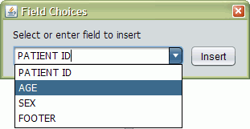
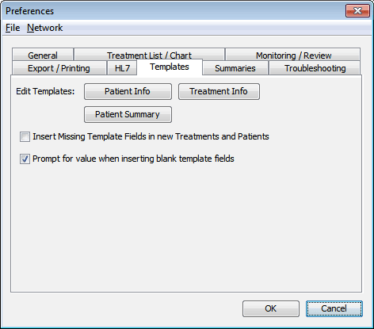

Patient and Treatment Templates
On this Page
Templates
There are certain fields that you may need to insert into the info areas for multiple patients or treatments, such as Patient ID, Sex, treatment Anesthesia, etc. Rather than enter the information manually each time, you can use GPD's flexible template mechanism to define a common set of fields that can be inserted efficiently when you're editing patient or treatment info.
Template File Format
Patients and Treatments each has its own template file. These can be viewed or edited on the Templates tab of the Preferences screen.
The template files are formatted in the standard field syntax, with a few additional properties. We'll start with an example patient template, and then explain each property.
Patient ID:
Age:
Sex: M|F|O|Unspecified
Footer: Proprietary Information of Healthy Medical Center
Do not distribute without consent.in this patient template, there are two bits of special functionality. In the value for the Sex field, there are multiple choices separated by a vertical bar |. When you insert this field (as will be explained below), you'll be prompted to select one of the choices. The Footer field is handled specially: if it is inserted, the value of the field – here two lines of text (note that any lines after the first have to be indented) – will be placed at the bottom of the info area, after any information already in it.
Here is an example treatment template:
Electrode Placement: Bifrontal|Unilateral (R)|Unilateral (L)
Patient: ${PATIENT ID:}
Anesthesia: ${PREVIOUS.ANESTHESIA:(none)}Variable-Syntax
There are a few additional points to note here. First, you see variable syntax: the name of a different field enclosed in ${ } with a default value given after the colon, i.e. ${VARIABLE:<default value>}. When you insert a template field, that variable will be replaced by the value of the referenced field, or the default value if the field doesn't exist. In this case, if you insert the Patient field into a treatment text area, ${PATIENT ID:} will be replaced by the Patient ID of the Patient that the treatment belongs to (in Treatment templates, you can refer to fields of the owning Patient), or else a blank (you will be prompted to enter a value). If the name of a variable begins with PREVIOUS. (note the period), then the value will be taken from the previous treatment or patient. In this case, ${PREVIOUS.ANESTHESIA:(none)} will be replaced by the Anesthesia value from the last treatment, or (none) if no previous anesthesia is available. If you reference a ${VARIABLE} and don't provide a default, then if that variable isn't found a blank will be used as the default.
It is generally a good idea to keep the field names in the Patient and Treatment templates distinct from each other, so that there's no confusion about the source of a field's value.
Additional Variables
PATIENT COUNTER
A number that is unique to every patient in the database, and can be accessed in Patient templates. For instance,
Unique Patient ID: Patient_${PATIENT COUNTER}
will expand to Patient_4, Patient_22, etc.
PATIENT NAME
In both Patient and Treatment templates, this is set to the patient's name.
TREATMENT COUNTER
A number that is unique to every treatment in the database, and can be accessed in Treatment templates. Its usage is parallel to PATIENT COUNTER above.
TREATMENT DATE
In Treatment templates, set to the treatment's date/time.
PATIENT TREATMENT NO
In Treatment templates, this indicates the position of the current treatment among the patient's treatment list. That is, the oldest treatment has a PATIENT TREATMENT NO of 1, the second-oldest treatment is 2, etc.
Inserting Template Fields
There are three commands for using template fields while editing patient or treatment info that can be accessed from the Template menu, or with keyboard shortcuts.

Insert Template Field (Ctrl+T)
A dialog of all the fields not in the current info area will appear. Select a field and hit enter or click the Insert button, and you'll be prompted for a value if necessary. Note that even for multiple-choice values, you can type a value not in the list, to insert it.
Complete Current Field (Ctrl+L)
If your cursor is on a line that has a field name but no value, then the value will be inserted from the template, prompting you if necessary.
Insert Missing Fields (Ctrl+M)
Any template fields not in the current info area will be appended, prompting you for values if necessary. This is a good command to set up a new patient or treatment with all your required fields.
Template Settings
The settings for patient and treatment templates are found in the Templates tab of the program Preferences screen.

Here you can edit the templates for patients, treatments, and patient summary reports, as well as set the following options:
Insert Missing Template Fields in new Treatments and Patients
When you create a new patient or collect a new treatment, the program will automatically insert any missing fields from the respective template.
Prompt for value when inserting blank template fields
If your template contains a line that is a blank field name, for example
Patient ID:
then GPD will pop up a dialog prompting you to enter a value for that field.
By selecting the above two options, you can automatically populate a new patient or treatment with a standard set of data.